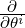
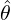
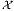
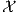

![Varp(x;θ)[ˆθ] ≽ I-1(θ),](alpha-FIM3x.png)
This column is also available in pdf: filename alpha-FIM.pdf
The Fisher Information Matrix [1] (FIM) for a family of parametric probability models {p(x;θ)}θ (densities p(x;θ) expressed with respect to a base measure ν) indexed by a D-dimensional parameter vector θ := (θ1,…,θD) is originally defined by
|
| (1) |
where l(x;θ) := log p(x;θ) is the log-likelihood function, and ∂i :=:  (by notational convention). The FIM is a D × D positive semi-definite matrix for a D-order family.
The FIM is a cornerstone in statistics and occurs in many places, like for example the celebrated Cramér-Rao lower bound [2] for an unbiased estimator 
Yet, it is common to encounter another equivalent expression of the FIM in the litterature [2, 1]
 | (2) |
This form of the FIM is well-suited to prove that the FIM is always positive semi-definite matrix [1]: I(θ) ≽ 0.
It turns out that one can define a family of equivalent representations of the FIM using the α-embedding of the parametric family. We define the α-representation of densities l(α)(x;θ) := kα(p(x;θ)) with
 | (3) |
The function l(α)(x;θ) is called the α-likelihood function.
The α-representation of the FIM is
|
| (4) |
In compact notation, we have Iij(α)(θ) = ∫ ∂il(α)∂jl(-α)dν(x) (this is the α-FIM). We can expand the α-FIM expressions as follows
The proof that Iij(α)(θ) = Iij(θ) follows from the fact that
Therefore we get

Thus Eq. 1 and Eq. 2 where two examples of the α-representation, namely the 1-representation and the 0-representation, respectively. The 1-representation of Eq. 1 is called the logarithmic representation, and the 0-representation of Eq. 2 is called the square root representation.
Note that Iij(θ) = E[∂il∂jl] = ∫
p∂il∂jldν(x) = ∫
∂ip∂jldν(x) = Iij(1)(θ) since ∂il = 
In information geometry [1], {∂il(α)}i plays the role of tangent vectors, the α-scores. Geometrically speaking, the tangent plane Tp(x;θ) can be described using any α-base. The statistical manifold M = {p(x;θ)}θ is imbedded into the function space ℝ, where  denotes the support of the densities.
Under regular conditions [2, 1], the α-representation of the FIM can further be rewritten as
Since we have


Notice that when α = 1, we recover the equivalent expression of the FIM (under mild conditions)
In particular, when the family is an exponential family [3] with cumulant function F(θ), we have
Similarly, the coefficients of the α-connection can be expressed using the α-representation as

The Riemannian metric tensor gij (a geometric object) can be expressed in matrix form Iij(α)(θ) using the α-base, and this tensor is called the Fisher metric tensor.
Initially created 19th September 2017 (last update September 22, 2017).
[1] O. Calin and C. Udrişte. Geometric Modeling in Probability and Statistics. Mathematics and Statistics. Springer International Publishing, 2014.
[2] Frank Nielsen. Cramér-Rao lower bound and information geometry. arXiv preprint arXiv:1301.3578, 2013.
[3] Frank Nielsen and Vincent Garcia. Statistical exponential families: A digest with flash cards. arXiv preprint arXiv:0911.4863, 2009.
[4] Ke Sun and Frank Nielsen. Relative Fisher information and natural gradient for learning large modular models. In Doina Precup and Yee Whye Teh, editors, Proceedings of the 34th International Conference on Machine Learning, volume 70 of Proceedings of Machine Learning Research, pages 3289–3298, International Convention Centre, Sydney, Australia, 06–11 Aug 2017. PMLR.